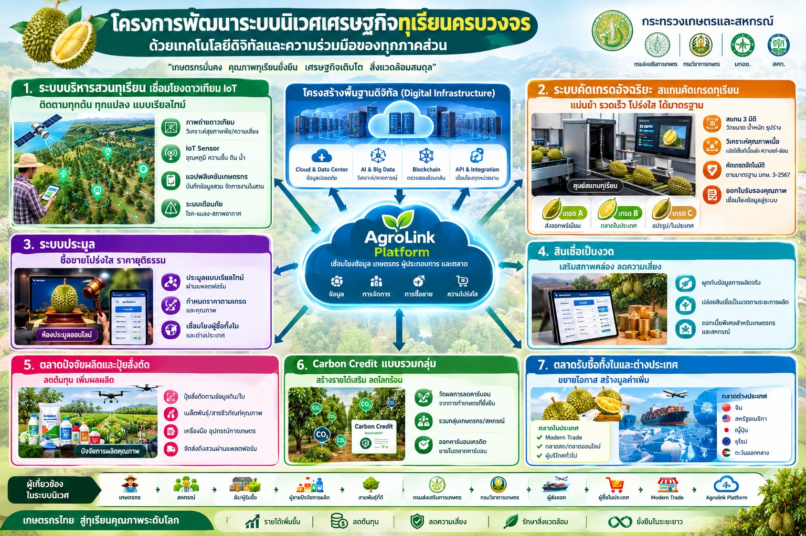

"ทุเรียนคุณภาพ เกษตรกรมั่นคง ตลาดเป็นธรรม ตรวจสอบได้ ลดโลกร้อน" — เอกสารแนวคิดโครงการ (Concept Paper) เสนอต่อกระทรวงเกษตรและสหกรณ์
ฉบับร่างเพื่อพิจารณา — บริษัท ภักดี คอร์ปอเรชั่น จำกัด (AgroLink)
ปัจจุบันเกษตรกร ล้ง ผู้ส่งออก และหน่วยงานรัฐในห่วงโซ่ทุเรียนทำงานแยกกัน ข้อมูลการผลิต คุณภาพ และราคาไม่เชื่อมโยงกัน ทำให้เกษตรกรมีอำนาจต่อรองต่ำ ต้นทุนการผลิตสูง เกิดข้อพิพาทเรื่องการคัดเกรด และยังมีปัญหาทุเรียนอ่อนที่กระทบความเชื่อมั่นของตลาดส่งออก
โครงการนี้เสนอให้พัฒนา AgroLink Smart Durian Ecosystem เป็นระบบนิเวศเศรษฐกิจทุเรียนที่เชื่อมโยงข้อมูล การผลิต เงินทุน คุณภาพ การซื้อขาย และการส่งออกไว้ในโครงสร้างเดียว โดย AgroLink ทำหน้าที่เป็นผู้พัฒนาโครงสร้างพื้นฐานดิจิทัล ไม่ปล่อยสินเชื่อและไม่กำหนดราคาเอง แนวคิดหลักประกอบด้วย 5 ด้าน
Digital Infrastructure เชื่อมโยงผู้เกี่ยวข้องในระบบนิเวศ — ปัญหาเชิงโครงสร้างของอุตสาหกรรมทุเรียนคือข้อมูลสำคัญกระจัดกระจายอยู่ในหลายหน่วยงานและหลายรูปแบบ AgroLink จะสร้างโครงสร้างพื้นฐานดิจิทัลกลางที่ผู้เกี่ยวข้องทุกฝ่ายใช้ร่วมกัน ประกอบด้วย
ผู้เกี่ยวข้องแต่ละฝ่ายได้ประโยชน์ต่างกัน: เกษตรกรได้ข้อมูลประกอบการตัดสินใจและการต่อรอง ล้งและผู้ส่งออกได้ผลผลิตที่ตรวจสอบคุณภาพและแหล่งที่มาได้ สถาบันการเงินประเมินความเสี่ยงได้แม่นยำขึ้น และภาครัฐได้ฐานข้อมูลทุเรียนระดับประเทศสำหรับวางแผนผลผลิตและกำหนดนโยบาย
ทุเรียนเป็นสินค้าเกษตรเศรษฐกิจสำคัญของไทย มีความต้องการสูงทั้งในประเทศและต่างประเทศ โดยเฉพาะตลาดจีน แต่ห่วงโซ่อุปทานยังเผชิญปัญหาเชิงโครงสร้างใน 4 ด้าน
| ด้าน | ปัญหาหลัก |
|---|---|
| การผลิต | ต้นทุนปุ๋ย สารเคมี แรงงาน และน้ำสูง; การใช้ปุ๋ยไม่อิงค่าวิเคราะห์ดินจริง; ขาดต้นพันธุ์คุณภาพที่ตรวจสอบแหล่งที่มาได้; โรครากเน่าโคนเน่า |
| คุณภาพและมาตรฐาน | ทุเรียนอ่อนและสารตกค้างกระทบความเชื่อมั่น; การคัดเกรดระหว่างเกษตรกรกับล้งมีข้อโต้แย้ง; Traceability ยังไม่ครอบคลุมสวนถึงผู้บริโภค |
| ตลาดและการเงิน | เกษตรกรมีอำนาจต่อรองจำกัด; ข้อมูลผลผลิตล่วงหน้าไม่เชื่อมโยงกัน; เข้าถึงสินเชื่อและประกันภัยไม่ทั่วถึง |
| ข้อมูลและสิ่งแวดล้อม | ข้อมูลกระจัดกระจายในหลายหน่วยงาน; การจัดการเศษวัสดุ น้ำ และการปล่อยก๊าซเรือนกระจกยังมีโอกาสพัฒนาอีกมาก |
จึงเสนอให้กระทรวงเกษตรและสหกรณ์ร่วมกับภาคเอกชน สหกรณ์ กลุ่มเกษตรกร ล้ง ผู้ส่งออก และสถาบันการเงิน พัฒนา AgroLink Smart Durian Ecosystem เพื่อยกระดับอุตสาหกรรมทุเรียนไทยอย่างครบวงจร
วัตถุประสงค์หลัก: สร้างระบบนิเวศเศรษฐกิจทุเรียนที่ทำให้เกษตรกรมีรายได้มั่นคง มีตลาดรองรับ ผลิตทุเรียนคุณภาพสูง และแข่งขันในตลาดโลกได้อย่างยั่งยืน
AgroLink เป็นศูนย์กลางเชื่อมข้อมูลและธุรกรรมตลอดห่วงโซ่ โดยไม่ทำหน้าที่ปล่อยสินเชื่อหรือกำหนดราคาทุเรียน แต่พัฒนาโครงสร้างพื้นฐานดิจิทัลให้ผู้เกี่ยวข้องทำธุรกรรมอย่างโปร่งใสและเป็นธรรม
| กลุ่ม | ผู้เกี่ยวข้อง | บทบาทในโครงการ |
|---|---|---|
| ต้นน้ำ | เกษตรกรผู้ปลูกทุเรียน | ผลิตตามมาตรฐาน บันทึกข้อมูลการผลิต จำหน่ายผ่านระบบ |
| ต้นน้ำ | กลุ่มเกษตรกร / สหกรณ์ | รวมซื้อปัจจัยการผลิต ผสมปุ๋ยสั่งตัด รวมขายผลผลิต บริหารสมาชิก |
| ต้นน้ำ | ผู้ผลิตต้นพันธุ์ | จำหน่ายต้นพันธุ์คุณภาพพร้อมตรวจสอบแหล่งที่มา |
| ต้นน้ำ | ผู้นำเข้าแม่ปุ๋ย / ผู้จำหน่ายปัจจัยการผลิต | แม่ปุ๋ย สารป้องกันกำจัดศัตรูพืช อุปกรณ์ ระบบน้ำ บริการผสมปุ๋ย |
| ต้นน้ำ | ผู้ให้บริการเทคโนโลยี | IoT, AI, Drone และระบบตรวจสอบคุณภาพ |
| กลางน้ำ | ล้งทุเรียน | รับซื้อ ตรวจคุณภาพ คัดเกรด บรรจุ |
| ปลายน้ำ | ผู้ส่งออก | ซื้อผลผลิตตามมาตรฐานและส่งออก |
| ปลายน้ำ | Modern Trade / ผู้ซื้อในประเทศ | รับซื้อและเข้าร่วมตลาดประมูล |
| สนับสนุน | สถาบันการเงิน / ประกันภัย | สินเชื่อ เงินทุนหมุนเวียน ประกันภัยพืชผล |
| สนับสนุน | หน่วยงานภาครัฐ | ส่งเสริม กำกับมาตรฐาน ตรวจสอบ วางแผนนโยบาย |
| แกนกลาง | AgroLink Platform | Digital Infrastructure เชื่อมโยงข้อมูล บริหารธุรกรรม สนับสนุนการตรวจสอบตลอดห่วงโซ่ |
ทุกระบบทำงานบนโครงสร้างพื้นฐานดิจิทัลและฐานข้อมูลชุดเดียวกัน
ปัจจุบันเมื่อเกษตรกรนำทุเรียนไปขายให้ล้ง ผลผลิตจะถูกคัดแยกเป็นเกรดต่าง ๆ และส่วนที่ตกเกรด โดยเกษตรกรมักตรวจสอบกระบวนการคัดเกรดไม่ได้ จึงเกิดข้อโต้แย้งเรื่องคุณภาพ น้ำหนัก และราคา
ระบบจะบันทึกทุกครั้งที่คัดเกรด ได้แก่ รหัสเกษตรกรและสวน วันเก็บเกี่ยว น้ำหนัก ภาพถ่าย ผลตรวจคุณภาพ เกรด ราคาต่อกิโลกรัม ผู้ตรวจ เวลาและสถานที่ เกษตรกรดูผลผ่านมือถือ และขอตรวจซ้ำได้ตามกระบวนการที่กำหนดล่วงหน้า เกณฑ์คัดเกรดกำหนดร่วมกันระหว่างเกษตรกร ล้ง ผู้ส่งออก และหน่วยงานมาตรฐาน อ้างอิงมาตรฐานสินค้าเกษตรเรื่องทุเรียนของ มกอช.
เครื่องสแกนคุณภาพเป็นการตรวจแบบไม่ทำลายผลผลิต (Non-Destructive Testing) ตรวจได้โดยไม่ต้องเจาะหรือปอกเปลือก ช่วยแก้ปัญหาทุเรียนอ่อนและเร่งการคัดเกรดก่อนจำหน่ายหรือส่งออก โครงการจะเลือกเทคโนโลยีให้เหมาะกับแต่ละจุดในห่วงโซ่
แนวทางของโครงการ: ใช้ NIR แบบพกพาคัดกรองความแก่ตั้งแต่ก่อนตัดที่สวน เพื่อป้องกันทุเรียนอ่อนต้นทาง แล้วใช้ X-ray / CT-Scan ที่ศูนย์ตรวจคุณภาพเพื่อตรวจตำหนิภายในและยืนยันเกรดก่อนเข้าประมูล ผลสแกนทุกครั้งผูกกับรหัสสวนและล็อตสินค้า เป็นหลักฐานอ้างอิงคุณภาพร่วมกันระหว่างเกษตรกร ล้ง ผู้ส่งออก และผู้บริโภค
| เทคโนโลยี | หลักการ | สิ่งที่ตรวจได้ | จุดเด่น | ข้อจำกัด | จุดติดตั้งที่เสนอ |
|---|---|---|---|---|---|
| NIR / NIRS Scanner | ยิงแสงอินฟราเรดย่านใกล้ผ่านเปลือก วิเคราะห์ค่าการดูดกลืนแสง | ปริมาณแป้ง น้ำตาล เปอร์เซ็นต์น้ำหนักเนื้อแห้ง (% Dry Matter) | รู้ผลเร็ว พกพาได้ สแกนบนต้นหรือหน้าสวนได้ | เปลือกหนาและหนามยาวบางสายพันธุ์อาจลดความแม่นยำ | สวน จุดรวบรวมผลผลิต เจ้าหน้าที่ภาคสนาม |
| X-ray / CT-Scan | รังสีเอกซ์สร้างภาพตัดขวางแบบสองหรือสามมิติ | จำนวนพู ความหนาแน่นเนื้อ ขนาดเมล็ด ตำหนิภายใน เช่น แก่นเต่า เต่าเผา หนอนเจาะเมล็ด ช่องว่างในพู | เห็นโครงสร้างภายในทั้งหมด ตรวจตำหนิภายในได้ชัด | เครื่องใหญ่ ราคาสูง ต้องมีระบบป้องกันรังสี | Durian Quality & Trading Center และล้งขนาดใหญ่ |
| Acoustic Wave | วิเคราะห์ความถี่เสียงจากการเคาะหรือยิงคลื่นเสียง | ความหลวมของเนื้อจากเปลือก ซึ่งบ่งบอกระดับความแก่-สุก | ใช้เสริมการประเมินความแก่ | ใช้ประกอบกับวิธีอื่น | จุดรวบรวมผลผลิต (เสริม NIR) |
| MRI | สแกนการกระจายตัวของน้ำและไขมันในเนื้อ | องค์ประกอบภายในเนื้อ | แม่นยำสูงมาก | ใช้ในห้องปฏิบัติการวิจัยมากกว่าเชิงพาณิชย์ | ห้องปฏิบัติการ ใช้สร้างข้อมูลอ้างอิงสอบเทียบ AI |
ระบบแสดงราคาซื้อขายจริงจำแนกตามจังหวัด พันธุ์ เกรด วันที่ และประเภทผู้ซื้อ พร้อมกลไกป้องกันการฮั้วประมูล การเสนอราคาปลอม และการเปิดเผยข้อมูลการค้าที่ไม่เหมาะสม
| รูปแบบ | กลไก |
|---|---|
| A: ประมูลผลผลิตล่วงหน้า | เกษตรกรลงทะเบียนผลผลิตคาดการณ์ (พันธุ์ ปริมาณ ช่วงเก็บเกี่ยว GAP ประวัติการผลิต) ให้ล้งและผู้ส่งออกเสนอราคา |
| B: ประมูลตามเกรดหลังตรวจคุณภาพ | ผู้ซื้อแข่งเสนอราคาแยกตามเกรด ปริมาณ และเงื่อนไขส่งมอบ |
| C: สัญญาซื้อขายล่วงหน้า | สหกรณ์ทำข้อตกลงกับล้ง ผู้ส่งออก หรือ Modern Trade กำหนดปริมาณ เกณฑ์คุณภาพ สูตรราคา กำหนดส่งมอบ การชำระเงิน เงื่อนไขปฏิเสธสินค้า |
ระบบต่อยอดนโยบายปุ๋ยสั่งตัดของกระทรวงเกษตรและสหกรณ์ โดยวางตำแหน่ง AgroLink เป็นเครื่องมือเร่งการขยายผลถึงเกษตรกรรายแปลง ไม่ใช่โครงการคู่ขนาน
| ขั้นตอน | การทำงาน | พันธมิตรหลัก |
|---|---|---|
| ข้อมูลดิน | แผนที่ธาตุอาหารพืชเป็นค่าตั้งต้น ยืนยันด้วยชุดตรวจ NPK แบบรวดเร็วรายแปลง และใช้ภาพดาวเทียมเป็นสัญญาณเตือนระหว่างฤดู | กรมพัฒนาที่ดิน, เกษตรตำบล (กรมส่งเสริมการเกษตร), มหาวิทยาลัยเกษตรศาสตร์ |
| คำนวณสูตร | คำนวณปริมาณแม่ปุ๋ยแต่ละชนิดตามผลตรวจดิน พันธุ์ และระยะการผลิตของต้นทุเรียน พร้อมประมาณการต้นทุนตามราคาตลาด | กรมวิชาการเกษตร (ระเบียบวิธีและตารางผสมปุ๋ย) |
| ผสมปุ๋ย | จับคู่คำสั่งผสมกับสหกรณ์หรือร้านปัจจัยการผลิตที่ผ่านการรับรองในพื้นที่ หรือรวมคำสั่งซื้อในพื้นที่ที่ยังไม่มีผู้ให้บริการ | สหกรณ์การเกษตร, ร้านเคมีเกษตรในพื้นที่, กรมส่งเสริมสหกรณ์ |
| จัดหาแม่ปุ๋ย | รวมความต้องการเพื่อจัดซื้อหรือประมูลแม่ปุ๋ยกับผู้นำเข้าโดยตรง | ผู้นำเข้าและผู้ค้าส่งแม่ปุ๋ย |
| ชำระเงิน | ค่าปุ๋ยเบิกเป็นส่วนหนึ่งของงวดสินเชื่อช่วงบำรุงต้น และหักคืนจากรายได้ขายผลผลิตปลายฤดู | สถาบันการเงิน, สหกรณ์ |
นอกจากปุ๋ยแล้ว ตลาดยังครอบคลุมต้นพันธุ์คุณภาพ สารป้องกันกำจัดศัตรูพืชที่ขึ้นทะเบียน ระบบน้ำ เซนเซอร์ IoT โดรน และบริการที่ปรึกษา โดยต้องมีกลไกรับรองคุณภาพผู้ผสมปุ๋ย (อบรม ตรวจเครื่องชั่งและเครื่องผสม) และปฏิบัติตามกฎหมายว่าด้วยปุ๋ย
ผลที่ได้คือเกษตรกรใช้ปุ๋ยตรงความต้องการของต้นทุเรียนและสภาพดินจริง ลดต้นทุนปัจจัยการผลิต ดินเสื่อมน้อยลง และยังเป็นข้อมูลยืนยันกิจกรรมลดการใช้ปุ๋ยไนโตรเจนสำหรับโครงการคาร์บอนต่ำ (ข้อ 5.4)
โครงการสวนทุเรียนคาร์บอนต่ำใช้สหกรณ์หรือกลุ่มเกษตรกรเป็นศูนย์กลาง AgroLink ประสานด้านเทคโนโลยีและข้อมูลร่วมกับผู้พัฒนาโครงการคาร์บอนที่มีความเชี่ยวชาญ ขั้นตอนคือ
เสนอจัดตั้งศูนย์ต้นแบบในพื้นที่ปลูกทุเรียนสำคัญ ตั้งที่สหกรณ์ กลุ่มแปลงใหญ่ หรือศูนย์รวบรวมผลผลิต เพื่อเป็นจุดเชื่อมระหว่างการผลิตจริงกับแพลตฟอร์ม และเป็นแหล่งรายได้จากบริการตรวจคุณภาพและธุรกรรม
บริการของศูนย์เรียงตามลำดับงาน
ประเมินความคุ้มค่าของศูนย์ต้นแบบก่อนขยายผล
เสนอให้กระทรวงเกษตรและสหกรณ์เป็นหน่วยงานหลักกำหนดกรอบความร่วมมือ โดยไม่เปลี่ยนแปลงอำนาจหน้าที่ตามกฎหมายของหน่วยงานใด และการเชื่อมโยงข้อมูลต้องได้รับความเห็นชอบจากเจ้าของข้อมูล
| หน่วยงาน | บทบาทในโครงการ |
|---|---|
| กรมส่งเสริมการเกษตร | ส่งเสริมเกษตรกร แปลงใหญ่ ประกาศวันเก็บเกี่ยว ตรวจเปอร์เซ็นต์เนื้อแห้งก่อนตัด ทะเบียนเกษตรกร เครือข่ายเกษตรตำบลร่วมตรวจดิน |
| กรมวิชาการเกษตร | GAP, GMP โรงคัดบรรจุ งานวิจัย ใบรับรองสุขอนามัยพืช ตรวจสารตกค้าง ระเบียบวิธีคำนวณสูตรปุ๋ย |
| มกอช. | มาตรฐานสินค้าทุเรียนและระบบข้อมูลมาตรฐาน |
| สศก. | วิเคราะห์ผลผลิต ต้นทุน ราคา และแนวโน้มตลาด |
| กรมพัฒนาที่ดิน | แผนที่ธาตุอาหารพืช วิเคราะห์ดิน และส่งเสริมการจัดการดิน |
| กรมส่งเสริมสหกรณ์ / กรมตรวจบัญชีสหกรณ์ | ส่งเสริมการรวมกลุ่ม สหกรณ์ต้นแบบปุ๋ยสั่งตัด ระบบบัญชีและการเงินสหกรณ์ |
| กรมชลประทาน | ข้อมูลและการบริหารจัดการน้ำ |
| ธ.ก.ส. | พิจารณาสินเชื่อและผลิตภัณฑ์ทางการเงิน |
| อบก. | กรอบมาตรฐานและการรับรอง Carbon Credit |
| กรมส่งเสริมการค้าระหว่างประเทศ | เชื่อมโยงตลาดส่งออก |
ตัวชี้วัดความสำเร็จ (กำหนดค่าเป้าหมายหลังสำรวจข้อมูลฐาน)
| ผู้ได้รับประโยชน์ | ประโยชน์หลัก |
|---|---|
| เกษตรกร | ต้นทุนปุ๋ยและปัจจัยการผลิตลดลง ขายได้ราคาเป็นธรรมขึ้น ลดข้อพิพาทเรื่องเกรด เข้าถึงเงินทุนและประกันภัย มีรายได้เสริมจากคาร์บอน |
| สหกรณ์ / กลุ่มเกษตรกร | เป็นศูนย์กลางบริการดิจิทัลของชุมชน มีรายได้จากบริการผสมปุ๋ยและรวมซื้อรวมขาย |
| ล้ง / ผู้ส่งออก / Modern Trade | ได้ผลผลิตที่ตรวจสอบคุณภาพและแหล่งที่มาได้ ลดความเสี่ยงทุเรียนอ่อนหลุดไปต่างประเทศ วางแผนรับซื้อล่วงหน้าได้ |
| สถาบันการเงิน | ประเมินความเสี่ยงจากข้อมูลการผลิตจริง ติดตามสินเชื่อได้ตลอดฤดู ลดหนี้ค้างชำระ |
| ภาครัฐ | ฐานข้อมูลทุเรียนระดับประเทศสำหรับวางแผนผลผลิต กำหนดนโยบาย และยกระดับภาพลักษณ์ทุเรียนไทยในตลาดโลก |
| สิ่งแวดล้อม | ลดการใช้ปุ๋ยเกินจำเป็น ใช้น้ำและพลังงานอย่างมีประสิทธิภาพ ลดการเผาเศษวัสดุ |
ความเสี่ยงหลักของโครงการและแนวทางบริหารจัดการมีดังนี้
| ความเสี่ยง | แนวทางบริหาร |
|---|---|
| เทคโนโลยีสแกนภายในยังไม่แม่นยำพอสำหรับตัดสินเกรดเชิงพาณิชย์ | ทดสอบในฤดูผลผลิตจริงเทียบกับวิธีอ้างอิง (เปอร์เซ็นต์เนื้อแห้ง) ใช้ AI เป็นข้อมูลประกอบจนกว่าจะผ่านเกณฑ์ |
| ล้งและผู้ซื้อไม่เข้าร่วมตลาดประมูล | ร่วมกำหนดเกณฑ์เกรดตั้งแต่ต้น เริ่มจากสัญญาล่วงหน้ากับผู้ซื้อที่พร้อม |
| คุณภาพการผสมปุ๋ยสั่งตัดไม่สม่ำเสมอ | รับรองผู้ผสมปุ๋ยก่อนขึ้นทะเบียน อบรมและตรวจเครื่องชั่ง ขออนุญาตใช้ระเบียบวิธีคำนวณจากกรมวิชาการเกษตร |
| การเชื่อมข้อมูลภาครัฐล่าช้า | ทำ MOU และข้อตกลงใช้ข้อมูลตั้งแต่ระยะแรก ออกแบบระบบให้ทำงานได้แม้ยังไม่เชื่อมครบ |
| ความเป็นส่วนตัวและความปลอดภัยของข้อมูล | ปฏิบัติตาม PDPA ขอความยินยอม กำหนดสิทธิเข้าถึงข้อมูลการค้า |
| การฮั้วประมูลหรือเสนอราคาปลอม | ยืนยันตัวตนผู้ซื้อ ตรวจจับพฤติกรรมผิดปกติ กำหนดบทลงโทษในข้อตกลงสมาชิก |
| Carbon Credit ไม่ผ่านการรับรองหรือคุ้มทุน | เลือกกิจกรรมที่มีระเบียบวิธี อบก. รองรับ ถือเป็นรายได้เสริมระยะยาว |
| เกษตรกรใช้งานเทคโนโลยีได้จำกัด | อบรมผ่านสหกรณ์ ใช้แอปที่เรียบง่าย มีเจ้าหน้าที่ภาคสนามสนับสนุน |
เสนอให้กระทรวงเกษตรและสหกรณ์พิจารณาแนวคิดโครงการนี้ในฐานะ "การยกระดับห่วงโซ่อุปทานทุเรียนไทยด้วย Digital Agriculture, Fair Trade และ Low Carbon Agriculture" โดยขอรับการพิจารณา 5 ประการ
ไม่ว่าจะในฐานะสหกรณ์ เกษตรกร ล้ง ผู้ส่งออก หรือพันธมิตรทางธุรกิจ ติดต่อทีมงาน AgroLink เพื่อขอข้อมูลเพิ่มเติมได้ทันที